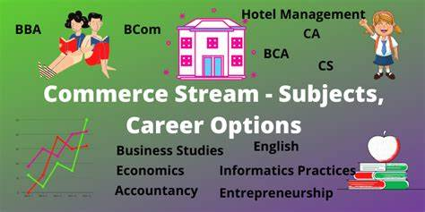

Commerce Stream
About the Commerce Stream
The Commerce stream focuses on Economics, Business Studies, and Accountancy, preparing students for careers in finance, entrepreneurship, and management.
About the Commerce Stream
Commerce is one of the most versatile and rewarding streams after the 10th class, offering a pathway to careers in business, economics, finance, law, and entrepreneurship. It is the backbone of the economy, emphasizing the functioning of markets, financial systems, and the creation of businesses. If you enjoy problem-solving, strategy, and working with numbers, this stream could be the perfect choice for you.
Subjects in the Commerce Stream: The Commerce stream introduces students to core subjects like Accountancy, Business Studies, and Economics. These subjects develop analytical and decision-making skills critical for business and financial careers. Mathematics is an optional but highly recommended subject for those aiming for technical roles in finance or economics.
Key Highlights of the Commerce Stream: The stream provides hands-on exposure to business principles, market dynamics, and the role of economic policies in global systems. Students also develop communication and leadership skills, essential for management and entrepreneurship roles.
Popular Career Paths: The Commerce stream opens up diverse career paths, including Chartered Accountancy (CA), Business Management, Investment Banking, Financial Analysis, Company Secretary (CS), and even emerging fields like Digital Marketing and E-Commerce. These careers offer stability and often provide lucrative salaries.
Professional Certifications: Students can enhance their qualifications with certifications like Chartered Accountant (CA), Certified Financial Planner (CFP), Chartered Financial Analyst (CFA), and Cost and Management Accountant (CMA). These certifications are globally recognized and highly valued in the job market.
How to Succeed in Commerce: Success in Commerce requires a combination of academic knowledge, practical experience, and networking. Regularly reading financial news, participating in business clubs, and interning with firms can provide a head start. Strong mathematical skills and problem-solving abilities are also vital for many careers in this field.
Future Opportunities: With a degree in commerce, you can pursue specialized careers in banking, insurance, taxation, or trade. Many top CEOs globally have their roots in commerce and business studies. The digital age has also increased the demand for roles in fintech, blockchain, and data-driven financial planning.
Commerce is not just about managing money; it's about creating value and driving innovation. The skills and knowledge gained in this stream prepare students to tackle global challenges and make significant contributions to society. Whether you aspire to lead a multinational corporation, start your own business, or become a financial expert, the Commerce stream offers the foundation you need.
Why Choose Commerce? Commerce is ideal for students who are curious about how businesses operate, enjoy working with data, and want to create a meaningful impact in the world of economics and finance. Its blend of theoretical and practical learning ensures that graduates are well-equipped to excel in diverse industries and adapt to changing market needs.
How to Achieve Your Goals
- Study core subjects thoroughly, including Accounting and Economics.
- Consider certifications like CA, CS, or MBA.
- Gain real-world experience through internships or projects.
Future Jobs and Opportunities
- Finance: Accountant, Financial Analyst.
- Entrepreneurship: Startup Founder, Business Consultant.
- Economics: Policy Maker, Economic Researcher.